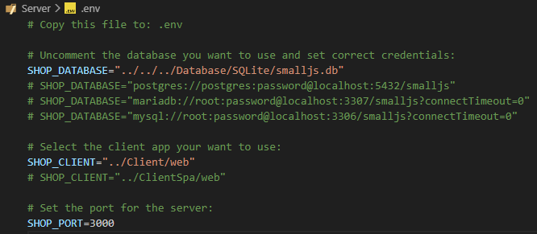

Setting up the .env file.
Before the server can run, it first needs to know were its database is.
This is specified in the
.env file.
Copy the file
.env.example to
.env and open it.
The file should look like this:

The default database points to the SQLite database created during installation.
For static file serving the default Shop Client is used.
The server will run on port 3000.